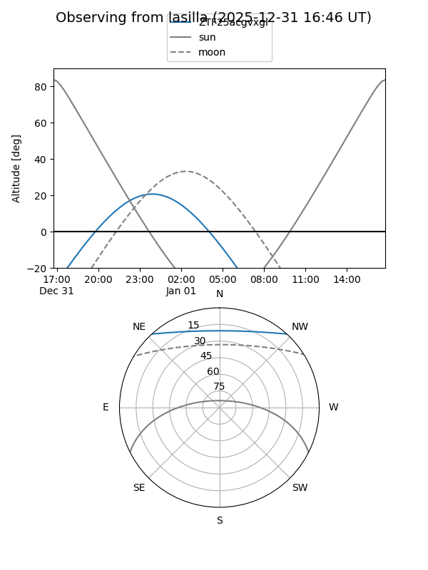
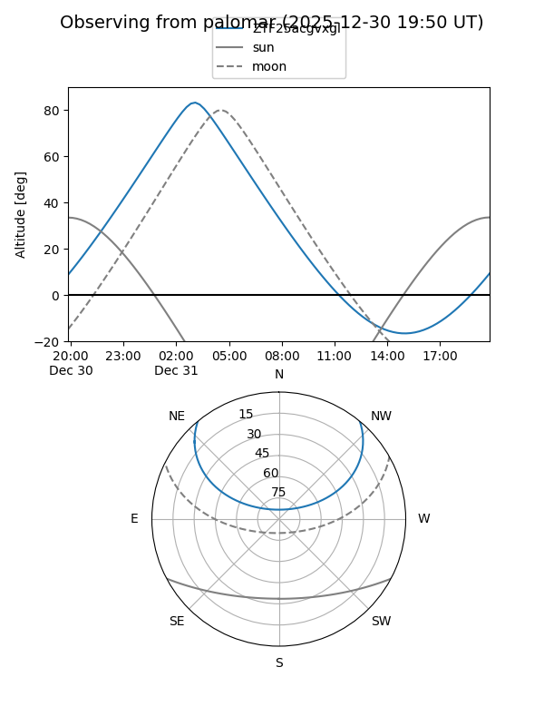
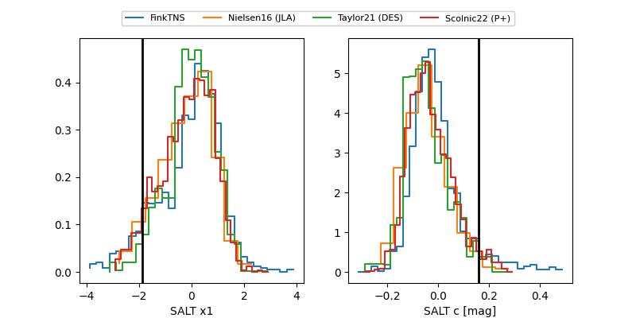

ZTF25acgvxgl
Target ZTF25acgvxgl at 2025-12-22 15:31
Aliases and brokers:
FINK: fink-portal.org/ZTF25acgvxgl
Lasair: lasair-ztf.lsst.ac.uk/objects/ZTF25acgvxgl
ALeRCE: alerce.online/object/ZTF25acgvxgl
alt names
ZTF25acgvxgl (ztf,fink_ztf)
Coordinates:
equatorial (ra, dec) = 28.2114,+39.89415
equatorial (HMS+DMS) = 01:52:50.75,+39:53:38.95
galactic (l, b) = (135.5392,-21.46953)
Flags:
Photometry:
last ztfg=20.47, ztfr=20.06
2 ztfg, 2 ztfr detections
Lightcurve

Visibility


Additional plots
